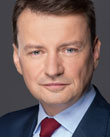

2026-07-20
Projekt wpłynął do Sejmu Druk nr 2884 ↗
w-tokuustawaIII czytanie na posiedzeniu Sejmu (2026-11-19)Sejm 10/2884
| Proces | Sejm kadencja 10, nr 2884 |
|---|---|
| Wpłynął | 2026-07-20 |
| Ostatnia zmiana źródła | 2026-11-19 |
| Źródło | api.sejm.gov.pl ↗ |
298 zdarzeń

10. kadencja, 69. posiedzenie, 1. dzień - Poseł Sprawozdawca Urszula Pasławska 10. kadencja, 69. posiedzenie, 1. dzień (17-11-2026) 8. punkt porządku dziennego: Sprawozdanie Komisji Obrony Narodowej o poselskim projekcie ustawy o zmianie ustawy o znakach Sił Zbrojnych Rzeczypospolitej Polskiej (druki nr 2884 i 3130). Poseł Sprawozdawca Urszula Pasławska: Dziękuję. Szanowny Panie Marszałku! Panie Ministrze! Wysoka Izbo! W imieniu Komisji Obrony Narodowej mam przyjemność przedstawienia sprawozdania o projekcie poselskim ustawy o zmianie ustawy o znakach Sił Zbrojnych Rzeczypospolitej Polskiej, złożonym z inicjatywy Polskiego Stronnictwa Ludowego. Jako przedstawicielka wnioskodawców miałam zaszczyt przedstawienia Komisji Obrony Narodowej tej propozycji, która zyskała poparcie komisji, i dzięki temu możemy procedować i rozmawiać merytorycznie na temat, wydawałoby się, niekontrowersyjnej ustawy. Bo wydaje się, że w sprawach wojska, w sprawach bezpieczeństwa powinniśmy mówić jednym językiem, poza politycznymi emocjami. Nasza ustawa wychodzi naprzeciw oczekiwaniom wojska. Dlatego proszę z jednej strony o merytoryczną rozmowę, a z drugiej strony o niewywoływanie politycznego sporu w tej sprawie. Jest charakterystyczne dla nas, posłów Komisji Obrony Narodowej, że potrafimy wznieść się również poza swoje osobiste poglądy. Szanowni Państwo! Sztandar jest jednym z najważniejszych symbolów jednostki wojskowej. Art. 8 stanowi, że jednostka, która utraci sztandar wskutek słabości ducha bojowego, ulega rozformowaniu. A jednocześnie nowe jednostki wojskowe mogą latami czekać na możliwość jego otrzymania. Dotyczy to również najlepszych z najlepszych. Jednostka Wojskowa GROM, powołana w 1990 r., otrzymała sztandar dopiero w 1996 r. Formoza, której tradycje sięgają lat 70., otrzymała swój sztandar dopiero w 2014 r. Jaki jest tego powód? Art. 9 ustawy z 1993 r. daje prawo do sztandaru tylko jednostkom liniowym, samodzielnym i zdolnym do walki. Ustawa nie precyzuje jednak, kiedy taką zdolność można stwierdzić. W praktyce obecne kryterium może oznaczać i oznacza wieloletnie oczekiwanie. Dlatego np. 1. Dywizja Piechoty Legionów, która od 2023 r. formuje się na terenie czterech województw, może taki sztandar zgodnie z obecnym stanem rzeczy otrzymać dopiero w 2034 r., mimo że i społeczeństwa lokalne, i wojsko budują swoją tożsamość już od 2023 r. Przedłożona ustawa porządkuje te kwestie. Jednostka przeznaczona do walki będzie mogła uzyskać sztandar już podczas formowania. Szanowni Państwo! Polska armia rośnie w siłę jak nigdy. Służy w niej prawie 220 tys. żołnierzy, półtora raza więcej niż w 2021 r. Wskazują na to dane. Na obronność wydajemy najwięcej - 5% PKB. Rocznie do służby zgłasza się ok. 60 tys. ludzi, a 40 tys. rozpoczyna szkolenie. Powstają nowe jednostki w całej Polsce. Nasi sojusznicy ten problem, o którym mówię, rozwiązują w inny sposób. Np. litewska 1. dywizja, odtworzona w styczniu 2025 r., otrzymała sztandar w kwietniu 2026 r., choć pełną gotowość będzie miała dopiero w 2030 r. Francuski pułk cyberobrony powstał 1 stycznia 2025 r., a sztandar dostał rok później. Moim zdaniem i zdaniem wielu polskich żołnierzy taki stan rzeczy powinien być również w Polsce. Dlatego odpowiadamy na inicjatywę dowódców i proponujemy zmianę art. 9 ustawy o znakach Sił Zbrojnych Rzeczypospolitej Polskiej. Prawo do sztandaru otrzymają po tej zmianie wszystkie jednostki przeznaczone do prowadzenia walki zbrojnej lub zabezpieczenia bojowego oraz szkoły wojskowe, także te, które są w trakcie formowania. Komisja Obrony Narodowej rozpatrzyła ten projekt 17 września i wnosi o jego uchwalenie. Według oceny skutków regulacji nie powinien on przyczynić się do dodatkowych wydatków budżetowych. Zgodnie z art. 11 ustawy sztandary będą mogły być fundowane przez lokalne społeczności, które chcą w ten sposób związać się z wojskiem i wspólnie budować tożsamość. Przed sztandarem kolejne pokolenia żołnierzy będą składać przysięgę, a sztandar nie będzie mógł zaginąć. N
10. kadencja, 69. posiedzenie, 1. dzień - Poseł Katarzyna Stachowicz 10. kadencja, 69. posiedzenie, 1. dzień (17-11-2026) 8. punkt porządku dziennego: Sprawozdanie Komisji Obrony Narodowej o poselskim projekcie ustawy o zmianie ustawy o znakach Sił Zbrojnych Rzeczypospolitej Polskiej (druki nr 2884 i 3130). Poseł Katarzyna Stachowicz: Panie Marszałku! Panie Ministrze! Wysoka Izbo! W imieniu Klubu Parlamentarnego Koalicja Obywatelska przedstawiam stanowisko wobec projektowanej nowelizacji ustawy z dnia 19 lutego 1993 r. o znakach Sił Zbrojnych Rzeczypospolitej Polskiej, która zakłada rozszerzenie katalogu jednostek wojskowych uprawnionych do posiadania sztandaru o jednostki znajdujące się na etapie formowania i osiągania gotowości bojowej. Zmiana art. 9 ustawy stanowi odpowiedź na postulaty środowiska dowódców jednostek wojskowych oraz uwzględnia dynamiczny rozwój Sił Zbrojnych Rzeczypospolitej Polskiej i proces tworzenia nowych jednostek. Obecne przepisy uzależniają prawo do posiadania sztandaru od osiągnięcia przez jednostkę zdolności do prowadzenia działań bojowych lub ich zabezpieczania, co w praktyce oznacza konieczność zakończenia procesu formowania, odpowiedniego ukompletowania oraz uzyskania właściwego poziomu wyszkolenia i zgrania bojowego. Sztandar jest nie tylko najwyższym znakiem jednostki, lecz także symbolem jej tożsamości, tradycji, honoru i więzi żołnierskiej. Jego obecność ma szczególne znaczenie już na początkowym etapie funkcjonowania jednostki, wspierając budowanie wspólnoty oraz kształtowanie jej tradycji. Ma to również wymiar praktyczny, m.in. podczas uroczystości składania przysięgi wojskowej przez żołnierzy dobrowolnej zasadniczej służby wojskowej. Proponowane rozwiązanie umożliwi nowo formowanym jednostkom pełniejsze uczestnictwo w uroczystościach wojskowych i patriotycznych, kultywowaniu tradycji oraz budowaniu więzi z lokalnymi społecznościami, jeszcze przed formalnym zakończeniem procesu formowania. Klub Koalicji Obywatelskiej popiera ten projekt i będzie głosował za jego przyjęciem. Dziękuję. (Oklaski) Przebieg posiedzenia
10. kadencja, 69. posiedzenie, 1. dzień - Poseł Arkadiusz Czartoryski 10. kadencja, 69. posiedzenie, 1. dzień (17-11-2026) 8. punkt porządku dziennego: Sprawozdanie Komisji Obrony Narodowej o poselskim projekcie ustawy o zmianie ustawy o znakach Sił Zbrojnych Rzeczypospolitej Polskiej (druki nr 2884 i 3130). Poseł Arkadiusz Czartoryski: Szanowny Panie Marszałku! Wysoki Sejmie! Klub Parlamentarny Prawo i Sprawiedliwość popiera tę niewielką w sumie nowelizację ustawy o znakach Sił Zbrojnych Rzeczypospolitej Polskiej i nowe brzmienie art. 9, które ma na celu uproszczenie formalnych wymogów przy staraniu się jednostki wojskowej o nadanie sztandaru. Rozumiemy, że Wojsko Polskie powiększa się, powstają nowe jednostki wojskowe, nowe pułki, brygady i dywizje, a nawet nowe komponenty Wojska Polskiego i istnieje potrzeba budowania wojska w oparciu o tradycję i wokół widocznego znaku ojczyzny. Bez wątpienia jest to sztandar Wojska Polskiego. Szanowni Państwo! Orzeł biały, biało-czerwona flaga i sztandar wojskowy to symbole narodowe, znaki tożsamości, honoru i godności narodowej. Sztandar w polskiej tradycji kumuluje w sobie uczucia patriotyczne i treści historyczne. Jest symbolem wierności ojczyźnie i męstwa. Sztandar wojskowy jest znakiem jednostki, przechowuje pamięć o jej służbie, o czynach jej żołnierzy i o ludziach, którzy powierzyli im ochronę Rzeczypospolitej. Przyznacie państwo, że przymioty, którymi opisałem sztandar w Wojsku Polskim, niosą za sobą wielką odpowiedzialność, odpowiedzialność, która spoczywa na tych, którzy starają się o nadanie sztandaru, budują wokół sztandaru tradycję jednostki wojskowej, należycie dbają o ceremonię prezentowania i przechowywania sztandaru. Dlatego przedmiotowa nowelizacja, choć niewielka, wprowadza dużą odpowiedzialność ze względu na wyjątkowość sztandarów w tradycji polskiej wojskowości. W Wojsku Polskim już od rycerskiego średniowiecza kształtowała się tradycja przysięgi składanej w obecności sztandaru, uroczystego prezentowania sztandaru, powierzania tego szczególnego znaku bojowego zasłużonym żołnierzom, którzy stanowią poczet sztandarowy. Wysoki Sejmie, w polskiej historii losy sztandarów jednostek wojskowych to niesamowite dzieje ludzi, zmagań wojennych, tajemniczych ukryć, fascynujące historie poszukiwań i odkryć. Przykładowo, sztandar 1. Pułku Ułanów Krechowieckich, otrzymany w 1917 r. od Polek ziemi mińskiej, w 1939 r. został ukryty w skrzynce amunicyjnej i zakopany pod Kockiem, a później odszukany przez Bolesława Podchorskiego, wywieziony do Wielkiej Brytanii i przekazany żołnierzom 2. korpusu. Inny przykład to sztandar ułanów jazłowieckich. Powstał z inicjatywy wychowanek zakładu sióstr niepokalanek w Jazłowcu, a na jego wstędze orderowej do dnia dzisiejszego widnieją ślady po ostrzale w bitwie nad Bzurą. Ciekawy przykład stanowi też sztandar Polskich Sił Powietrznych na Zachodzie. Wykonano go potajemnie w Wilnie w 1940 r. przy udziale sióstr benedyktynek, poświęcono go w Ostrej Bramie, a następnie w warunkach wojny i okupacji przewieziono do Wielkiej Brytanii. Dla polskich lotników był darem od rodaków, którzy mimo wojny i dzielącej ich odległości pamiętali o służbie lotników. Jeszcze jeden przykład sztandaru, który przywołam: sztandar 1. Samodzielnej Brygady Spadochronowej gen. Stanisława Sosabowskiego. Warszawianki, kobiety w Warszawie wykonały go w konspiracji. Powstał w pracowni sióstr westiarek. Widniały na nim słowa: Surge Polonia, co oznacza: Powstań, Polsko. W 1944 r., czyli podczas okupacji, został wywieziony do Wielkiej Brytanii. Gen. Stanisław Sosabowski pisał o nim jako o darze walczącej stolicy dla brygady. Te niesamowite historie nawiązują do olbrzymiej odpowiedzialności tych, którzy po nowelizacji tej ustawy będą starali się o nadanie sztandaru swojej jednostce. Wysoka Izbo! Wciąż szukamy też sztandarów ukrytych w czasie wojny. Polska ziemia wciąż je nam oddaje. Przywołuję tu przykład sztandaru dzielnego 68. Pułku Piechoty z Wrześni, który walczył nad Bzurą, w
10. kadencja, 69. posiedzenie, 1. dzień - Poseł Marek Jakubiak 10. kadencja, 69. posiedzenie, 1. dzień (17-11-2026) 8. punkt porządku dziennego: Sprawozdanie Komisji Obrony Narodowej o poselskim projekcie ustawy o zmianie ustawy o znakach Sił Zbrojnych Rzeczypospolitej Polskiej (druki nr 2884 i 3130). Poseł Marek Jakubiak: Panie Marszałku! Panie Ministrze! Pani Poseł - jak rozumiem - Wnioskowawczyni! Chcę powiedzieć, że w istocie chyba państwo nie załapali, co sztandar oznacza dla żołnierza. Te wszystkie słowa, puste frazesy nie mają większego sensu. Otóż to jest tak, że jak żołnierz przechodzi koło sztandaru, to oddaje mu honory, skłania głowę, jeżeli nie ma czapki, jest pełen szacunku dla niego i jest gotów za ten sztandar zginąć. Dlaczego? Dlatego że sztandar jest honorem jednostki. Jednostka zasłużyła sobie na ten sztandar. Ona go wywalczyła w ramach szkoleń, dzięki obowiązkowości, wynikom. Taki sztandar to marzenie jednostki. Pytanie brzmi: Dlaczego nie powstanie ustawa, która nada np. dowódcom jednostek uprawnienia do nadawania stopnia generała porucznikom, dlatego że chcą? Nie, na stopień generała trzeba zasłużyć. Tak samo jest ze sztandarem. Na sztandar trzeba sobie zasłużyć. Jeżeli jednostka wojskowa scertyfikuje się, będzie wartością bojową, przejdzie poligony, będzie zasługiwała na sztandar i o ten sztandar może walczyć. Ale jednostka, która jest uczniakiem, jednostka, która powstaje, która jeszcze nie wie, co będzie robiła? Ona ma już mieć sztandar? Z jakiego to powodu? Z jakiego, pytam się, to powodu? Jaka różnica będzie wtedy pomiędzy jednym sztandarem jednostki bojowej a drugim sztandarem jednostki powstałej? Jaka będzie różnica między tymi sztandarami? Otóż sztandar, proszę państwa, oznacza honor dla jednostki za to, że jest bojowa, za to, że jest gotowa walczyć i jest w tym celu wyszkolona, przeszkolona, scertyfikowana. Jej żołnierze wiedzą, że stanowią wartość bojową, a ich celem jest obrona własnej ojczyzny. Składają przysięgę na sztandar, tego sztandaru pilnują, bo jak wszem i wobec wiadomo, w Polsce sztandar jest czymś innym niż w Europie. Sztandar nasz... Nawet stopień wojskowy chorążego był nadawany po to, żeby jako największy i najważniejszy człowiek w chorągwi pilnował chorągwi, czyli sztandaru, danej jednostki bojowej. I za ten sztandar każdy był w stanie oddać swoją rękę albo życie. To o to w tym wszystkim chodzi. Ja wiem, że jak nie byliście w wojsku, to wy tego nie rozumiecie. Natomiast jeszcze raz mówię, to jest ciężkie do przekazania. Nie wtrącajcie się w wojsko. To jest ceremoniał wojskowy wykuty przez setki lat. Po co deprecjonujecie takie rzeczy? Już wystarczy, że Prawo i Sprawiedliwość zlikwidowało korpus chorążych, pierwszy stopień oficerski II Rzeczypospolitej. Po co grzebać przy tym? To właśnie historia jest ostoją Rzeczypospolitej armii. To właśnie tradycje wojskowe są naszą potęgą. To my oddajemy sobie honory dwoma palcami. No to wprowadźcie ustawę, że jak wszyscy oddają całą dłonią, to i my oddawajmy całą dłonią honory. Nie, jesteśmy polską armią. Szacunek do polskiego, proszę państwa, sztandaru jest diametralnie inny niż w Europie. Taka jest prawda. I tak naprawdę, jeżeli jakiś niedowartościowany oficer przyszedł do pani poseł i zaczął tam opowiadać, że: my chcielibyśmy sztandar. Miej, trzymamy za ciebie kciuki, zdobądź go. To będzie wielki zaszczyt dla twojej jednostki, jak zdobędziesz ten sztandar, a nie, że my ci go damy i ty go masz. Jakiej wartości to będzie jednostka? Jakiego honoru będzie ona pilnowała? Co będzie stało w sali tradycji? Bo jak wszem i wobec wiadomo, jak zgubią ten sztandar, to ta jednostka musi być rozformowana, bo taka jest tradycja wojskowa. Pytam, czy my w dobrym kierunku idziemy. W złym. Jedno, co w armii nam może zostać, to to, że mamy tradycję i ceremoniał wojskowy. To, że my go pielęgnujemy od setek lat. To, że ludzie za to ginęli. To, że armia polska nie wydziera sobie takich rzeczy, nie da sobie wydzierać takich rzeczy z rąk. Dlatego też bardzo
10. kadencja, 69. posiedzenie, 1. dzień - Poseł Urszula Pasławska 10. kadencja, 69. posiedzenie, 1. dzień (17-11-2026) 8. punkt porządku dziennego: Sprawozdanie Komisji Obrony Narodowej o poselskim projekcie ustawy o zmianie ustawy o znakach Sił Zbrojnych Rzeczypospolitej Polskiej (druki nr 2884 i 3130). Poseł Urszula Pasławska: Tak jest. W imieniu klubu Polskiego Stronnictwa Ludowego przedstawiam stanowisko w sprawie przedmiotowej ustawy, która jest złożona i podpisana przez posłów Polskiego Stronnictwa Ludowego z szacunku do wojska, w odniesieniu do wojska i wobec wojska. I apel, który złożył pan poseł, mój przedmówca, aby nie mieszać polityki z wojskiem, proszę skierować również w swoją stronę, ponieważ nie znam niedowartościowanych oficerów i nie obrażałabym takim hasłem, że ktoś jest niedowartościowany, bo jest to czysty populizm. Gdyby nie było takiego oczekiwania, powszechnego w wojsku, nie składalibyśmy takiego projektu ustawy. Prawdą jest to, że każdy kraj ma swoją specyfikę, ale prawdą jest też to, że polskie wojsko i polska armia zmieniają się w sposób błyskawiczny i bardzo szybki. Że jesteśmy w innej sytuacji niż większość krajów NATO, nie mówiąc o Unii Europejskiej, dlatego że jesteśmy na wschodniej flance i to my sami mamy podejmować działania, które wzmocnią naszą armię, nie tylko inwestycyjnie, bo to jest szalenie ważne. I Polskie Stronnictwo Ludowe stoi również na straży apolityczności, wzmacniania infrastrukturalnego, bojowego polskiej armii, ale również mamy pełną świadomość, że morale, tożsamość i symbolika są niezwykle ważne w tej konkurencji wartości, o której dzisiaj mówimy podczas tej debaty. Będziemy wspierać konsekwentnie ten projekt ustawy, konsekwentnie wsłuchiwać się w głos również Wojska Polskiego i nie będziemy ingerować w jego oczekiwania, także nie będziemy wskazywać rozwiązań politycznych. Bo myślę, że polskiemu wojsku potrzeba wiele wsparcia, a nie kłótni politycznej. I jestem z jednej strony trochę zaskoczona, bo tak jak powiedziałam na samym początku, w pracach Komisji Obrony Narodowej jest inaczej niż w innych komisjach. Mówię to, bo jestem po raz pierwszy w tej kadencji w tej komisji i naprawdę odnoszę się z wielkim szacunkiem do wszelkich propozycji, bo potrafimy mówić jednym głosem i często głosować jak jeden mąż. I chciałabym, aby taka kulturalna i mądra, i rozważna praca pozostała dalej w tej komisji. Dziękuję za wszystkie zdania, a w szczególności dziękuję tym klubom, które zdecydują się czy już zdecydowały się poprzeć naszą ustawę. Dziękuję bardzo. (Oklaski) Przebieg posiedzenia
10. kadencja, 69. posiedzenie, 1. dzień - Poseł Andrzej Tomasz Zapałowski 10. kadencja, 69. posiedzenie, 1. dzień (17-11-2026) 8. punkt porządku dziennego: Sprawozdanie Komisji Obrony Narodowej o poselskim projekcie ustawy o zmianie ustawy o znakach Sił Zbrojnych Rzeczypospolitej Polskiej (druki nr 2884 i 3130). Poseł Andrzej Tomasz Zapałowski: Panie Marszałku! Panie Ministrze! Projekt ustawy o zmianie ustawy o znakach Sił Zbrojnych Rzeczypospolitej Polskiej, jak tu już wspominano, odnosi się głównie do zmiany tradycji nadawania jednostkom sztandaru. Oczywiście każdą tradycję można zmienić. Znalazł się czas na zmiany w tak małym, wręcz symbolicznym obszarze działań Sił Zbrojnych, a nie znalazł się czas na rzeczy najistotniejsze. Jest czas na zmianę zapisów dotyczących prawa do posiadania sztandaru jednostki wojskowej i umożliwienia nadawania sztandaru także jednostkom będącym w trakcie formowania i nabywania zdolności bojowych, a na inne istotne ustawy, zmiany czasu zabrakło. 3 lata temu Ministerstwo Obrony Narodowej w odpowiedzi na moje interpelacje pisało m.in.: MON dokonuje szerokiej, gruntownej analizy działań różnych obszarów resortu obrony narodowej i Sił Zbrojnych, w tym m.in. dotychczasowych planów i strategii, związanych również z zagadnieniami poruszonymi w interpelacji. W efekcie przeprowadzonych prac zostanie powołany zespół, który przygotuje raport otwarcia. Do dzisiaj tego raportu nie ma. Na jego podstawie będą opracowane rekomendacje, w oparciu o które będą podejmowane dalsze decyzje, ukierunkowane na wprowadzenie niezbędnych zmian w Siłach Zbrojnych i funkcjonowaniu resortu obrony narodowej. Wstępne informacje i wnioski płynące z ww. przeglądu wskazują, że odpowiednie zmiany w różnych obszarach dla wzmocnienia Sił Zbrojnych i bezpieczeństwa są konieczne. Minęły ponad 3 lata. Nie mamy strategii bezpieczeństwa narodowego, którą 2 czy 3 miesiące temu skierowano do prezydenta. 3 lata nad tym pracowano. Co za tym idzie - nie mamy strategii obronności. Reforma systemu dowodzenia trwa nieustannie od kilku lat. Wychodzi na to, że ten Sejm nie da rady tego uchwalić, zmienić. W sprawie biurokracji w wojsku, o której wielokrotnie mówiłem, nic nie zrobiono. Rażąco odmienne traktowanie żołnierzy OT i żołnierzy zawodowych, np. w zakresie zwolnienia z egzaminów na prywatne posiadanie broni. 3 lata temu była zapowiedź, nic nie zrobiono. Brak zmian wymogów dla strzelnic wojskowych. Dalej są absurdalne wymogi, przez które prawie dwie dekady temu zniszczono wiele strzelnic w Polsce. Funkcjonowanie wojskowych oddziałów gospodarczych, które były nieporozumieniem jeszcze za ministra Klicha, ich powołanie. Brak odpowiedniego szkolenia rezerw oficerskich i podoficerskich. Trwa samozadowolenie i ich przygotowanie dla armii tylko na kilkutygodniowe walki. Brak odpowiednich zasobów. Nadal po strzelaniu żołnierze zbierają łuski, z czego śmieją się sojusznicy i co jest kuriozum. Była zapowiedź, że coś się z tym zrobi. Ten kabaret trwa dalej. Nie poruszam kwestii modernizacji, bo to jest oddzielny, zbyt szeroki temat. Przede wszystkim brak zwolnienia z przetargu wielu przedsiębiorstw w trakcie wojny. O tym też pisałem, mówiłem. Nic nie zrobiono. To jest blokada mentalna. Szanowni państwo, jeżeli wydajemy pieniądze na reformę Sił Zbrojnych, jeżeli modernizujemy Siły Zbrojne, a jednocześnie w obszarze zmian prawnych, zmian wielu uregulowań, który jest bardzo istotny, jest prosta zasada: Po co zmieniać, jak jest dobrze dla sztabów, a nie dla żołnierzy... Żołnierze się męczą. Jest wiele takich obszarów. Na koniec powiem o jeździe dostosowawczej, o której wielokrotnie mówiłem. Żołnierz, który wsiada do Stara czy Jelcza, musi jeździć 20 godzin, żeby dostosować się do drugiego żołnierza. To samo z quadem. To są miliony wyrzucone w błoto. Jak ktoś przychodzi do firmy i ma prawo jazdy (Dzwonek), to siada za kierownicę, a tutaj dalej jest blokada, nic się nie dzieje. Dziękuję bardzo. Przebieg posiedzenia
10. kadencja, 69. posiedzenie, 1. dzień - Poseł Marcin Skonieczka 10. kadencja, 69. posiedzenie, 1. dzień (17-11-2026) 8. punkt porządku dziennego: Sprawozdanie Komisji Obrony Narodowej o poselskim projekcie ustawy o zmianie ustawy o znakach Sił Zbrojnych Rzeczypospolitej Polskiej (druki nr 2884 i 3130). Poseł Marcin Skonieczka: Panie Marszałku! Panie Ministrze! Wysoka Izbo! Mam zaszczyt przedstawić stanowisko Klubu Parlamentarnego Centrum wobec projektu ustawy o zmianie ustawy o znakach Sił Zbrojnych Rzeczypospolitej Polskiej. Sztandar wojskowy jest symbolem honoru, tradycji i wierności ojczyźnie. Łączy żołnierzy i przypomina o zobowiązaniu wobec państwa oraz wspólnoty, której służą. Wokół niego buduje się tożsamość jednostki, szacunek do jej historii i poczucie odpowiedzialności za towarzyszy broni. Szczególnego znaczenia nabiera w chwili przysięgi, kiedy młody człowiek przyjmuje obowiązki polskiego żołnierza. Obecne przepisy przyznają prawo do posiadania sztandaru jednostkom liniowym zdolnym do prowadzenia walki zbrojnej lub zabezpieczenia bojowego działań oraz szkołom wojskowym. Jak wskazują wnioskodawcy, oznacza to, że jednostki dopiero będące w trakcie formowania i nabywania zdolności bojowych muszą czekać na możliwość otrzymania własnego sztandaru. Jak mówiła wnioskodawczyni, nawet zasłużone jednostki czekają po kilka lat, tymczasem już przyjmują żołnierzy, prowadzą szkolenia i uczestniczą w życiu lokalnej społeczności. Omawiany projekt ustawy pozwoli nadawać sztandary także jednostkom, które dopiero się tworzą. Dzięki temu żołnierze będą mogli budować wspólnotę wokół własnego sztandaru już od początku służby. Wysoka Izbo! Szacunek dla tradycji powinien znajdować oparcie w sprawnym i przejrzystym prawie. Państwo powinno odpowiadać na uzasadnione potrzeby dowódców i żołnierzy. Przepisy muszą również nadążać za dynamicznym rozwojem polskiej armii. Dlatego Klub Parlamentarny Centrum popiera procedowany projekt ustawy. Dziękuję bardzo. (Oklaski) Przebieg posiedzenia
10. kadencja, 69. posiedzenie, 1. dzień - Poseł Piotr Paweł Strach 10. kadencja, 69. posiedzenie, 1. dzień (17-11-2026) 8. punkt porządku dziennego: Sprawozdanie Komisji Obrony Narodowej o poselskim projekcie ustawy o zmianie ustawy o znakach Sił Zbrojnych Rzeczypospolitej Polskiej (druki nr 2884 i 3130). Poseł Piotr Paweł Strach: Dziękuję bardzo. Panie Marszałku! Wysoka Izbo! Korzystając z okazji, warto z tej mównicy wspomnieć o polskiej racji stanu. Czym jest polska racja stanu? Dziś w polskim parlamencie gościmy delegację Rady Najwyższej Ukrainy. W ramach prezydium komisji obrony miałem spotkanie z tą delegacją. Dużo rozmawialiśmy o bezpieczeństwie w Europie i o sytuacji na Ukrainie. Nie ulega wątpliwości, że polską racją stanu jest klęska Rosji na Ukrainie, klęska państwa, które jest wobec nas jawnie wrogie, które chce ograniczyć polską rolę w NATO, żąda wycofania wojsk sojuszniczych z krajów natowskich wschodniej flanki, które chce znów podzielić Europę i zapoczątkować nowy rozdział, nową żelazną kurtynę. Podczas rozmów z przedstawicielami parlamentu ukraińskiego zadałem kilka pytań. Pierwsze z nich dotyczyło tego, co po Putinie, co się stanie, gdyby rzeczywiście Putina w jakiś sposób zabrakło, czy wojna się skończy, czy Ukraina będzie bezpieczna. Usłyszałem jednogłośnie ze strony różnych środowisk politycznych, delegacji, że wojna prawdopodobnie się nie skończy, ponieważ Rosją rządzą służby, które mają imperialistyczną politykę. Co więcej, społeczeństwo rosyjskie jest zindoktrynowane, uległo propagandzie mocarstwowości. Zagrożenie dla Ukrainy i dla sąsiadów Rosji, w tym Polski, cały czas będzie aktualne. Drugie pytanie, jakie zadałem, brzmiało: Czego się boicie? Odpowiedzieli wprost, że boją się rosyjskiej propagandy, i to zarówno propagandy wewnątrz ich kraju, która sprawia, że ich społeczeństwo nie będzie chciało się bronić, nie będzie miało siły, zostanie wymęczone, jak i tej propagandy, która jest skierowana do Europy. Powiedzieli, że na zewnątrz boją się tego, że w Europie wygrają siły, które staną po stronie Rosji, które nie będą chciały pomagać Ukrainie. Dlaczego o tym mówię? Dlatego, że na tej sali są osoby, które są po stronie Rosji i jawnie o tym mówią. Większość polskiego parlamentu, większość polskiego społeczeństwa stoi po stronie polskiej racji stanu, po stronie wolności, demokracji, bezpieczeństwa, ale są i tacy w tej Izbie, którzy stoją po stronie imperializmu rosyjskiego. Aż w głowie się nie mieści, że tak może być, że po doświadczeniach wynikających z naszej historii, poczynając od czasów zaborów, przez czasy okupacji, aż po czasy PRL-u, ktoś jeszcze w Polsce kibicuje imperializmowi rosyjskiemu. To jest absolutnie niesłychane. Co więcej, imperializm rosyjski jest szkodliwy dla samego społeczeństwa rosyjskiego. Oto dane, które zostały niedawno ujawnione: ponad 0,5 mln zabitych rosyjskich żołnierzy na Ukrainie, 1,5 mln ciężko rannych, stale wykluczonych z armii rosyjskiej. Gigantyczne sankcje, straty gospodarcze, miliardowe straty dotyczące sprzętu, marginalizacja międzynarodowa, wasalizacja wobec Chin, rozwój NATO - to są czynniki, które są tak naprawdę klęską dla narodu rosyjskiego. Kibicowanie imperializmowi, putinizmowi jest sprzeczne nie tylko z polską racją stanu, ale de facto nawet z tą rosyjską. Jakie wielkie szaleństwo jest wśród ludzi, którzy myślą o kibicowaniu Putinowi. Oczywiście Polska 2050 poprze tę ustawę. Dziękuję bardzo. (Oklaski) Przebieg posiedzenia
10. kadencja, 69. posiedzenie, 1. dzień - Poseł Jarosław Sachajko 10. kadencja, 69. posiedzenie, 1. dzień (17-11-2026) 8. punkt porządku dziennego: Sprawozdanie Komisji Obrony Narodowej o poselskim projekcie ustawy o zmianie ustawy o znakach Sił Zbrojnych Rzeczypospolitej Polskiej (druki nr 2884 i 3130). Poseł Jarosław Sachajko: Panie Marszałku! Wysoka Izbo! Panie Ministrze! Są ustawy, które zmieniają wielkie mechanizmy państwa, i są takie, które dotyczą jego symboli. Nie oznacza to jednak, że te drugie mają mniejsze znaczenie. Dlatego z pełnym przekonaniem popieramy projekt ustawy dotyczący sztandarów jednostek Wojska Polskiego. Sztandar wojskowy to nie jest zwykły kawałek materiału. To jest symbol honoru, wierności ojczyźnie, żołnierskiej przysięgi i gotowości do nadzwyczajnych poświęceń. To znak, pod którym przez pokolenia polscy żołnierze walczyli o naszą niepodległość. Można odebrać żołnierzowi broń, rozwiązać jednostkę, ale nie można odebrać narodowi pamięci o tych, którzy walczyli pod jego sztandarem. Dzisiaj rozbudowujemy Siły Zbrojne RP, tworzymy nowe jednostki, odbudowujemy zdolności obronne i właśnie dlatego potrzebujemy również odbudowy żołnierskich tradycji. Projekt ustawy usuwa niepotrzebne ograniczenia. Pozwala nadawać sztandar jednostce przeznaczonej do prowadzenia walki lub zabezpieczania bojowego również wtedy, kiedy dopiero osiąga pełną gotowość. Sztandar nie powinien czekać na zakończenie formowania jednostki, powinien od początku jednoczyć jej żołnierzy. Nie zapomnijmy również o społecznościach lokalnych. W wielu polskich miejscowościach jednostka wojskowa jest źródłem dumy. Jej sztandar łączy żołnierzy z mieszkańcami, kombatantami, szkołami i kolejnymi pokoleniami Polaków. Oczywiście musimy zachować powagę tego symbolu. Nadanie sztandaru nie może być jedynie uroczystością propagandową, zastępującą rzeczywiste wyposażenie, wyszkolenie i zdolności bojowe, ale też nie powinniśmy pozbawiać nowo formowanych jednostek prawa do budowania własnej tożsamości. Panie Ministrze! Silna armia potrzebuje nowoczesnego uzbrojenia, ale potrzebuje również ducha, tradycji i poczucia wspólnoty. Czołgi, rakiety, drony zapewniają siłę ognia, sztandar przypomina żołnierzowi, dlaczego i dla kogo ma walczyć. Dlatego popieramy tę ustawę. Wojsko Polskie musi być silne nie tylko poprzez uzbrojenie, ale również poprzez wartości, które przez wieki pozwalały Polakom bronić swojej ojczyzny. Apeluję do kolegów z Rozwoju Plus o więcej zaufania do prezydenta Karola Nawrockiego, bo to on nadaje sztandar jednostkom wojskowym. Jestem przekonany, że nie będziemy mieli czego się wstydzić. Dziękuję. (Oklaski) Przebieg posiedzenia
10. kadencja, 69. posiedzenie, 1. dzień - Poseł Sławomir Zawiślak 10. kadencja, 69. posiedzenie, 1. dzień (17-11-2026) 8. punkt porządku dziennego: Sprawozdanie Komisji Obrony Narodowej o poselskim projekcie ustawy o zmianie ustawy o znakach Sił Zbrojnych Rzeczypospolitej Polskiej (druki nr 2884 i 3130). Poseł Sławomir Zawiślak: Panie Marszałku! Wysoka Izbo! Panie Ministrze! W omawianej ustawie jedno rozróżnienie przesądza o praktycznym skutku. Jednostka przeznaczona do walki może istnieć i szkolić żołnierzy, zanim uzyska pełną zdolność bojową. Nowelizacja pozwoli też jej wcześniej otrzymać własny sztandar. W ustawie zachowuje się uprawnienia szkół wojskowych, zmienia się podstawę ubiegania się o sztandar i pozostawia się odrębny akt jego nadania. Koło Poselskie Konfederacja Korony Polskiej popiera ten kierunek zmian. Sztandar wzmacnia wolę żołnierza służenia ojczyźnie. Sztandar wzmocni też proces kształtowania postaw patriotycznych wśród mieszkańców społeczności lokalnej. Będzie też krzewił tradycję jednostki wojskowej, ale też całego Wojska Polskiego. Szkoda mi tylko, że ci, którzy złożyli ten projekt, nie zastanowili się nad zmianą decyzji zapisanych w Ceremoniale Wojskowym Sił Zbrojnych, wprowadzonych bodajże w 2024 r., które ograniczają ilość wejść kompanii honorowych Wojska Polskiego razem ze sztandarem do kościołów. Z tego, co się orientuję, większość żołnierzy polskich jest katolikami. Można zrobić procedurę - gdyby ktoś nie chciał - żeby żołnierz nie szedł do kościoła. Natomiast wydaje mi się, że zanik tej tradycji i niewprowadzanie wojska ze sztandarem do kościoła są złe. W związku z tym, gdyby była możliwość jeszcze wrócenia do tego, byłbym bardzo zobowiązany też w imieniu naszego koła. Sztandar nadaje prezydent Rzeczypospolitej na wniosek ministra obrony. Samo wejście nowelizacji w życie nie oznacza wręczenia sztandaru każdej jednostce. Trzeba ustalić, czy istnieje ona i czy jej przeznaczenie odpowiada ustawie. W trakcie procedowania nad ustawą Biuro Legislacyjne pytało, czy nowe brzmienie dostatecznie jasno obejmuje etap formowania. Warto wprost dopisać, że przepis obejmuje jednostki w trakcie formowania. Takie doprecyzowanie będzie służyło celowi projektu i ograniczy ewentualne pola do sporu. Pozostaje również kwestia wykonania. Minister powinien dostosować procedury do nowego kryterium oraz sprawdzić, czy przepisy dostatecznie jasno określają postępowanie ze sztandarem po trwałym przerwaniu formowania jednostki. Ustawa ma wejść w życie po upływie 14 dni od ogłoszenia. Trzeba więc wykorzystać ten czas na przygotowanie jednolitego stosowania przepisów w granicach ustawowych kompetencji. Zastrzeżenie zgłoszone w komisji dotyczyło obawy o rangę sztandaru nadawanego przed zakończeniem formowania. Odpowiedzią powinny być staranność wniosku, powaga nadania i dbałość o tradycję. Możliwość wcześniejszego otrzymania znaku nie zmienia obowiązków dotyczących przygotowania jednostki do jej zadań. Art. 14 ust. 3 zachowuje napis: Bóg, honor, ojczyzna. Szacunek dla tych słów wymaga rzetelności także w prawie i finansach. Koszt może ponieść fundator, lecz sejmowi eksperci przewidują również możliwość finansowania budżetowego. Potrzebne są także tutaj czytelne zasady i rozliczenie wydatków. (Dzwonek) Kończąc, chciałbym powiedzieć, że popieramy ten wniosek, ponieważ silne, suwerenne państwo powinno łączyć tradycję wojskową z odpowiedzialnym wykonywaniem własnych decyzji. Sztandary mają, przypomnę, także szkoły, organizacje społeczne, mają druhowie strażacy. I on w naszej tradycji zawsze wykonuje dobre zadanie. Dziękuję bardzo. (Oklaski) Przebieg posiedzenia
10. kadencja, 69. posiedzenie, 1. dzień - Poseł Anna Paluch 10. kadencja, 69. posiedzenie, 1. dzień (17-11-2026) 8. punkt porządku dziennego: Sprawozdanie Komisji Obrony Narodowej o poselskim projekcie ustawy o zmianie ustawy o znakach Sił Zbrojnych Rzeczypospolitej Polskiej (druki nr 2884 i 3130). Poseł Anna Paluch: Wysoka Izbo! Żołnierz powinien się utożsamiać ze wspólnotą, za którą walczy. To oczywiste. Polskie wojsko to jest tradycja polskiego oręża. Ale ja mam nieodparte wrażenie, że ten projekt ustawy jest nie tyle dla żołnierzy Wojska Polskiego, ile dla posłów PSL, którzy wobec katastrofalnie niskich notowań potrzebują się za wszelką cenę uwiarygodnić w oczach Polaków. Obawiam się, że to będą daremne usiłowania. Ja bym jednak apelowała do wnioskodawców, żeby ich szef skoncentrował się na dokończeniu zakupów, które zostały przygotowane za czasów naszego rządu. Kontrakty zawarte przed 2023 r. powinny zostać wykonane, podczas gdy państwo przez minione 2 lata nie wydaliście 25 mld zł. Oczywiście, że żołnierz potrzebuje tradycji, potrzebuje się identyfikować z chlubną tradycją, ale potrzebuje też kamizelek kuloodpornych, hełmów, pakietów osobistych i wszystkich potrzebnych rzeczy. (Dzwonek) A jeżeli naprawdę chcecie zrobić coś pożytecznego dla żołnierzy, to zlikwidujcie nareszcie zespół prokuratorów w Siedlcach, który zajmuje się ściganiem żołnierzy za wykonywanie obowiązków i za wierność żołnierskiej przysiędze. Przebieg posiedzenia
10. kadencja, 69. posiedzenie, 1. dzień - Poseł Witold Tumanowicz 10. kadencja, 69. posiedzenie, 1. dzień (17-11-2026) 8. punkt porządku dziennego: Sprawozdanie Komisji Obrony Narodowej o poselskim projekcie ustawy o zmianie ustawy o znakach Sił Zbrojnych Rzeczypospolitej Polskiej (druki nr 2884 i 3130). Poseł Witold Tumanowicz: Panie Marszałku! Wysoka Izbo! Projekt umożliwia wcześniejsze nadawanie sztandarów, ale nie określa jednoznacznie, od którego momentu będzie to możliwe. W związku z tym mam pytania: Czy sztandar będzie można nadać już po formalnym utworzeniu jednostki, czy dopiero po wyznaczeniu dowódcy i rozpoczęciu kompletowania jej stanu osobowego? Czy ministerstwo przewiduje wprowadzenie jednolitych kryteriów, żeby uniknąć uznaniowości? Dziękuję bardzo. Przebieg posiedzenia
10. kadencja, 69. posiedzenie, 1. dzień - Poseł Małgorzata Pępek 10. kadencja, 69. posiedzenie, 1. dzień (17-11-2026) 8. punkt porządku dziennego: Sprawozdanie Komisji Obrony Narodowej o poselskim projekcie ustawy o zmianie ustawy o znakach Sił Zbrojnych Rzeczypospolitej Polskiej (druki nr 2884 i 3130). Poseł Małgorzata Pępek: Panie Marszałku! Wysoka Izbo! Dotychczasowe sztywne przepisy wiązały prawo do posiadania sztandaru wyłącznie z całkowitym zakończeniem procesu formowania i uzyskaniem statusu jednostki liniowej, co w realiach dynamicznego rozwoju armii zamykało nowo tworzonym oddziałom drogę do ich najwyższego symbolu. Proponowana zmiana w art. 9 ustawy wreszcie pozwala na nadawanie sztandarów jednostkom wojskowym już w trakcie ich formowania i nabywania zdolności bojowych. To wyraz poszanowania dla tradycji i wsparcia dla żołnierzy, którzy od pierwszego dnia służby potrzebują spoiwa tożsamości. Mając na uwadze powyższe, proszę wnioskodawców o odpowiedź na pytanie: Jakie konkretne kryteria organizacyjne będą decydować o tym, że jednostka będąca w trakcie formowania jest już gotowa do otrzymania sztandaru na mocy projektowanego (Dzwonek) art. 9? (Oklaski) Przebieg posiedzenia
10. kadencja, 69. posiedzenie, 1. dzień - Poseł Lidia Czechak 10. kadencja, 69. posiedzenie, 1. dzień (17-11-2026) 8. punkt porządku dziennego: Sprawozdanie Komisji Obrony Narodowej o poselskim projekcie ustawy o zmianie ustawy o znakach Sił Zbrojnych Rzeczypospolitej Polskiej (druki nr 2884 i 3130). Poseł Lidia Czechak: Szanowny Panie Marszałku! Sztandar wojskowy jest symbolem honoru, tradycji i wierności ojczyźnie. Projektowana ustawa umożliwia jego nadanie również jednostkom wojskowym, które dopiero się formują. Ile nowych jednostek wojskowych jest obecnie w trakcie formowania, ile z nich nie osiągnęło jeszcze pełnej zdolności bojowej i w jakim terminie planowane jest zakończenie tego procesu? Czy wszystkie jednostki tworzone w ramach rozbudowy polskiej armii mają zapewnione odpowiednie wyposażenie, uzbrojenie i środki na szkolenie żołnierzy? W uzasadnieniu projektu możemy przeczytać, że brak możliwości posiadania sztandaru przez nowo formowane jednostki utrudnia kształtowanie postaw patriotycznych wśród żołnierzy, szczególnie odbywających dobrowolną zasadniczą służbę wojskową. Mam pytania. Ilu jednostkom wojskowym nowe przepisy umożliwią nadanie sztandaru? Czy Ministerstwo Obrony Narodowej przewiduje dodatkowe działania wspierające pielęgnowanie tradycji wojskowych oraz wychowanie patriotyczne młodych żołnierzy? Dziękuję. Przebieg posiedzenia
10. kadencja, 69. posiedzenie, 1. dzień - Poseł Krzysztof Habura 10. kadencja, 69. posiedzenie, 1. dzień (17-11-2026) 8. punkt porządku dziennego: Sprawozdanie Komisji Obrony Narodowej o poselskim projekcie ustawy o zmianie ustawy o znakach Sił Zbrojnych Rzeczypospolitej Polskiej (druki nr 2884 i 3130). Poseł Krzysztof Habura: Panie Marszałku! Panie Ministrze! Wysoki Sejmie! Sztandar wojskowy to nie tylko symbol jednostki. To przede wszystkim symbol honoru, patriotyzmu, żołnierskiej przysięgi i wierności ojczyźnie. Dziś, kiedy intensywnie rozbudowujemy polską armię i tworzymy nowe jednostki wojskowe, obowiązujące przepisy nie pozwalają im na posiadanie własnego sztandaru do czasu osiągnięcia zdolności bojowej. To rozwiązanie ogranicza możliwość kultywowania tradycji wojskowych i budowania tożsamości jednostki już od pierwszych dni jej funkcjonowania. Dlatego proponowana nowelizacja jest potrzebna i zasługuje na poparcie. Czy Ministerstwo Obrony Narodowej szacowało, ilu nowo formowanym jednostkom wojskowym proponowana zmiana umożliwi wcześniejsze nadanie sztandaru? Dziękuję. (Oklaski) Przebieg posiedzenia
10. kadencja, 69. posiedzenie, 1. dzień - Poseł Włodzimierz Skalik 10. kadencja, 69. posiedzenie, 1. dzień (17-11-2026) 8. punkt porządku dziennego: Sprawozdanie Komisji Obrony Narodowej o poselskim projekcie ustawy o zmianie ustawy o znakach Sił Zbrojnych Rzeczypospolitej Polskiej (druki nr 2884 i 3130). Poseł Włodzimierz Skalik: Szanowny Panie Marszałku! Wysoka Izbo! Panie Ministrze! Sztandar z dewizą: Bóg, honor, ojczyzna to najwyższy znak jednostki. To na niego żołnierz składa przysięgę i przy nim uczy się, że służba jest zobowiązaniem wobec narodu. Przepisy ustawowe mają pozwalać, by fundatorami sztandarów mogły być np. samorządy, organizacje kombatanckie czy inne organizacje, bez obciążania podatników. Taka oddolna więź narodu z armią jest nam bliska. Mam jednak jedno pytanie do pani poseł sprawozdawcy. Co stanie się ze sztandarem jednostki, która otrzyma go w trakcie formowania, ale zostanie rozformowana lub przekształcona, zanim osiągnie gotowość bojową? Czy postępowanie z takim sztandarem będzie gwarantowało należny mu szacunek i cześć? Przebieg posiedzenia
10. kadencja, 69. posiedzenie, 1. dzień - Poseł Klaudia Jachira 10. kadencja, 69. posiedzenie, 1. dzień (17-11-2026) 8. punkt porządku dziennego: Sprawozdanie Komisji Obrony Narodowej o poselskim projekcie ustawy o zmianie ustawy o znakach Sił Zbrojnych Rzeczypospolitej Polskiej (druki nr 2884 i 3130). Poseł Klaudia Jachira: Panie Marszałku! Wysoka Izbo! Jakiś czas temu mieliśmy organizowane szkolenie wojskowe dla posłów, posłanek i urzędników państwowych. W trakcie takiego szkolenia najlepiej widać profesjonalizm i to, jak polska armia zmienia się na lepsze. Jeśli ktoś jeszcze na nim nie był, to serdecznie z tego miejsca polecam. Mam nadzieję, że będą następne jego odsłony. Niestety jeszcze szybciej zmienia się sytuacja geopolityczna. Nie mamy już czasu do stracenia. Mamy za to na szczęście dostęp do ogromnych środków z programu SAFE, pomimo weta prezydenta. To środki, które należy mądrze wydać i uczyć się na błędach poprzedniej ekipy rządzącej. Wśród tych oczywiście wielkich spraw są też kwestie, które nic nas nie kosztują. Jednak rozumiem, że mogą być one ważne dla nowo powstających jednostek, które powinny mieć od samego początku swój sztandar, by móc się wokół niego zjednoczyć, mieć poczucie solidarności. O tym, że takie symboliczne sprawy nie są błahą sprawą, niech świadczy międzynarodowe zamieszanie, które wybuchło, gdy w Ukrainie wybrano kontrowersyjnych patronów. Wierzę, że nasze sztandary (Dzwonek) nie będą budziły żadnych kontrowersji u naszych sojuszników, za to zdecydowany strach u wrogów. (Oklaski) Przebieg posiedzenia
10. kadencja, 69. posiedzenie, 1. dzień - Poseł Andrzej Tomasz Zapałowski 10. kadencja, 69. posiedzenie, 1. dzień (17-11-2026) 8. punkt porządku dziennego: Sprawozdanie Komisji Obrony Narodowej o poselskim projekcie ustawy o zmianie ustawy o znakach Sił Zbrojnych Rzeczypospolitej Polskiej (druki nr 2884 i 3130). Poseł Andrzej Tomasz Zapałowski: Panie Marszałku! Panie Ministrze! Dowódca WOT-u, obecny szef Sztabu Generalnego, deklarował 8 lat temu, że bardzo szybko zmienią przepisy, żeby żołnierze WOT-u mogli brać do domów hełmy. Poruszyłem tę kwestię w Sztabie Generalnym 2 lata temu, bo to jest tylko rozporządzenie, ale niemoc MON-u, Sztabu Generalnego jest ponadprzeciętna. Minęło 8 lat i nie jesteście w stanie tego zrobić. Na czym polega problem? Kiedy żołnierz przychodzi na 2-dniową rotację, staje rano w kolejce. Cała kompania pobiera hełmy, a wieczorem stają w kolejce i zdają hełmy. Na drugi dzień przychodzą rano, pobierają hełmy, a wieczorem je zdają. Zatem 5 godzin szkolenia to jest pobieranie hełmu, zdawanie hełmu, ewentualnie (Dzwonek) maski gazowej. Dziękuję bardzo. Przebieg posiedzenia
10. kadencja, 69. posiedzenie, 1. dzień - Poseł Bożena Lisowska 10. kadencja, 69. posiedzenie, 1. dzień (17-11-2026) 8. punkt porządku dziennego: Sprawozdanie Komisji Obrony Narodowej o poselskim projekcie ustawy o zmianie ustawy o znakach Sił Zbrojnych Rzeczypospolitej Polskiej (druki nr 2884 i 3130). Poseł Bożena Lisowska: Panie Marszałku! Wysoki Sejmie! Projekt nowelizacji zmienia przesłanki prawa do sztandaru jednostki wojskowej. Zamiast jednostek liniowych, sztandar mają otrzymywać jednostki przeznaczone do prowadzenia walki zbrojnej lub zabezpieczenia bojowego. Dziś prawo do posiadania sztandaru mają jednostki liniowe wszystkich rodzajów Sił Zbrojnych oraz szkoły wojskowe. Projekt zastępuje pojęcie jednostki liniowej nowym kryterium: przeznaczeniem jednostki do prowadzenia walki zbrojnej lub zabezpieczenia bojowego działań. W uzasadnieniu czytamy, że taką propozycję zmian zgłosili sami dowódcy jednostek wojskowych. Jednostki wojskowe w trakcie formowania przez odległe terminy zakończenia procesu nie mogły używać sztandaru, najwyższego znaku jednostki, przy przysiędze żołnierzy (Dzwonek) i uroczystościach. Poselski projekt to zmienia. (Oklaski) Przebieg posiedzenia
10. kadencja, 69. posiedzenie, 1. dzień - Poseł Marcin Skonieczka 10. kadencja, 69. posiedzenie, 1. dzień (17-11-2026) 8. punkt porządku dziennego: Sprawozdanie Komisji Obrony Narodowej o poselskim projekcie ustawy o zmianie ustawy o znakach Sił Zbrojnych Rzeczypospolitej Polskiej (druki nr 2884 i 3130). Poseł Marcin Skonieczka: Panie Marszałku! Panie Ministrze! Wysoka Izbo! Pan poseł Jakubiak w swoim wystąpieniu przekonywał... (Poseł Marek Jakubiak: Jestem.) ...że jednostka wojskowa musi zasłużyć na sztandar i wyraził obawy, że ustawa spowoduje de facto obniżenie rangi sztandaru. Chciałbym uspokoić pana posła i zwrócić uwagę, że nie zmienia się art. 10 ustawy o znakach Sił Zbrojnych Rzeczypospolitej Polskiej, który określa wprost, że sztandar nadaje jednostce wojskowej prezydent Rzeczypospolitej Polskiej na wniosek ministra Obrony Narodowej. Akurat w tej sprawie kompetencje prezydenta są zapisane wprost w ustawie. Natomiast ja mam pytanie do pana ministra: Ile jednostek wojskowych czeka obecnie na nadanie sztandaru... (Poseł Bożena Lisowska: O to chciałam zapytać, ale nie zdążyłam.) ...i ile jednostek skorzysta z procedowanych dziś przepisów? Dziękuję bardzo. Przebieg posiedzenia
10. kadencja, 69. posiedzenie, 1. dzień - Poseł Marek Jakubiak 10. kadencja, 69. posiedzenie, 1. dzień (17-11-2026) 8. punkt porządku dziennego: Sprawozdanie Komisji Obrony Narodowej o poselskim projekcie ustawy o zmianie ustawy o znakach Sił Zbrojnych Rzeczypospolitej Polskiej (druki nr 2884 i 3130). Poseł Marek Jakubiak: Panie Marszałku! Panie Ministrze! Bardzo mnie cieszy to, że państwo mówicie w taki godny sposób o tym sztandarze, tylko cały czas odnoszę wrażenie, że nie rozumiecie, o co mi chodzi. Proszę państwa, żeby mieć ten sztandar, trzeba na to po prostu zasłużyć, tak jak mówię, literalnie zasłużyć: zdać egzaminy bojowe, mieć umiejętności, być jednostką bojową. A na końcu jest ta pieczątka w postaci sztandaru. I wtedy jest wielka duma, bo są jednostką wojskową. Zainspirowała mnie tu pani poseł Jachira. Jak już rozpoczęliśmy szkolenie tutaj, wewnątrz Sejmu, to może wystąpcie o sztandar wojskowy. Przecież w końcu to honor wielkich jednostek wojskowych, ledwo zorganizowanych, które nic nie potrafią, ale wszystko chcą. Sztandar wojskowy jest honorem, proszę państwa. I tego proszę się trzymać. Bardzo bym chciał, żeby te niedowartościowane osoby, które chcą mieć sztandar przed tym, jak na niego zasłużą, dojrzały do tego momentu, w którym powiedzą: mamy sztandar (Dzwonek), bo na to zasłużyliśmy. Przebieg posiedzenia
10. kadencja, 69. posiedzenie, 1. dzień - Poseł Jarosław Sachajko 10. kadencja, 69. posiedzenie, 1. dzień (17-11-2026) 8. punkt porządku dziennego: Sprawozdanie Komisji Obrony Narodowej o poselskim projekcie ustawy o zmianie ustawy o znakach Sił Zbrojnych Rzeczypospolitej Polskiej (druki nr 2884 i 3130). Poseł Jarosław Sachajko: Panie Marszałku! Wysoka Izbo! Panie Ministrze! Popieram projekt umożliwiający przydzielanie sztandarów jeszcze niezorganizowanym jednostkom wojskowym, bo armia to nie tylko czołgi, samoloty, rakiety. To również honor, tradycja, patriotyzm. Sztandar jednoczy żołnierzy, przypomina o przysiędze i zobowiązaniu wobec ojczyzny. Ale pamiętajmy o tym, że za sztandarem musi iść również siła bojowa. Nie wystarczy uroczyste wręczenie sztandaru, jeżeli jednostce brakuje żołnierzy, sprzętu czy wyszkolenia. Dlatego pytam pana ministra: Ile nowo tworzonych jednostek wojskowych nie osiągnęło jeszcze pełnej gotowości bojowej i kiedy otrzymają one komplet wyposażenia, uzbrojenia oraz wyszkolone kadry, aby mogły skutecznie bronić Polski i swojego sztandaru? (Dzwonek) A obrażanie żołnierzy przez kolegów na tym etapie uważam za jakieś aberracje. Przebieg posiedzenia
10. kadencja, 69. posiedzenie, 1. dzień - Sekretarz Stanu w Ministerstwie Obrony Narodowej Paweł Bejda 10. kadencja, 69. posiedzenie, 1. dzień (17-11-2026) 8. punkt porządku dziennego: Sprawozdanie Komisji Obrony Narodowej o poselskim projekcie ustawy o zmianie ustawy o znakach Sił Zbrojnych Rzeczypospolitej Polskiej (druki nr 2884 i 3130). Sekretarz Stanu w Ministerstwie Obrony Narodowej Paweł Bejda: Panie Marszałku! Wysoka Izbo! Ministerstwo Obrony Narodowej w pełni popiera przedmiotową inicjatywę zawartą w poselskim projekcie ustawy o zmianie ustawy o znakach Sił Zbrojnych Rzeczypospolitej Polskiej. Projektowana nowelizacja przewiduje zmianę brzmienia art. 9 ustawy z dnia 19 lutego 1993 r. o znakach Sił Zbrojnych Rzeczypospolitej Polskiej. Zgodnie z proponowanym rozwiązaniem prawo do posiadania sztandaru będzie przysługiwało jednostkom wojskowym przeznaczonym do prowadzenia walki zbrojnej lub zabezpieczenia bojowego działań oraz szkołom wojskowym. W obecnym stanie prawnym uprawnienie to ograniczone jest do jednostek liniowych wszystkich rodzajów sił zbrojnych rozumianych jako samodzielne jednostki organizacyjne już zdolne do prowadzenia walki zbrojnej lub zabezpieczenia bojowego działań oraz szkół wojskowych. Przedłożona regulacja wychodzi naprzeciw licznym postulatom zgłaszanym zarówno przez szefa Sztabu Generalnego Wojska Polskiego i dowódców jednostek wojskowych, jak i przez przedstawicieli społeczeństwa skupionych w komitetach honorowych, które chcą ufundować sztandary. W skład tych gremiów wchodzą m.in. reprezentanci samorządów terytorialnych, organizacji pozarządowych, partnerów społecznych, a także stowarzyszeń, w tym weteranów, kombatantów oraz rezerwistów. Wprowadzenie projektowanych zmian wpłynie bardzo pozytywnie na morale żołnierzy, budowanie etosu służby, poczucie dumy z przynależności do konkretnej formacji oraz głębszą identyfikację z nowo formowanymi oddziałami. Kluczowym aspektem tej zmiany jest umożliwienie żołnierzom składania przysięgi wojskowej na sztandar macierzystej jednostki. Zgodnie z obowiązującymi uregulowaniami, w tym zapisami ˝Ceremoniału Wojskowego Sił Zbrojnych Rzeczypospolitej Polskiej˝, w sytuacji gdy dany oddział nie posiada jeszcze własnego znaku, akt ślubowania odbywa się na sztandar innej jednostki wojskowej z tego samego lub ościennego garnizonu, wyznaczonej przez dowódcę garnizonu albo przełożonego. A zatem posiadanie własnego symbolu znaku Sił Zbrojnych Rzeczypospolitej Polskiej od wczesnego etapu formowania nada temu podniosłemu wydarzeniu właściwą rangę i osobisty wymiar. Ponadto omawiana inicjatywa ustawodawcza znacząco wzmocni wizerunek Sił Zbrojnych Rzeczypospolitej Polskiej oraz zacieśni więzi pomiędzy wojskiem a mieszkańcami regionów, w których stacjonują nowe formacje. Jednostka wojskowa zyska możliwość godnego reprezentowania swojego środowiska, występując zgodnie z ceremoniałem wojskowym ze sztandarem ufundowanym przez lokalną społeczność podczas świąt państwowych oraz innych wydarzeń patriotycznych z udziałem wojskowej asysty honorowej organizowanych przez miejscowe władze i mieszkańców. Tego typu wspólne inicjatywy budują wzajemne zaufanie i poczucie współodpowiedzialności za bezpieczeństwo regionu i państwa. W ostatnim okresie do resortu Obrony Narodowej w przedmiotowej sprawie wpłynęły wnioski komitetów społecznych, które spotkały się z negatywną odpowiedzią z uwagi na obowiązujące przepisy, m.in. w sprawie ufundowania sztandarów. I tutaj te przykłady. Odpowiadam panu posłowi. To m.in. 16. Brygada Zmotoryzowana w Załuskach - wniosek złożony w dniu 4 czerwca 2025 r., Brygada Rakiet w Toruniu - wniosek złożony w dniu 13 czerwca 2025 r., 2. Brygada Pancerna Legionów w Czerwonym Borze - wniosek złożony w dniu 30 marca 2026 r., 21. Lekki Batalion Górski w Wojnarowej - wniosek złożony w dniu 4 sierpnia 2026 r. Odpowiadając też na pytania i wątpliwości państwa posłów, to chcę powiedzieć, że nie będzie tutaj uznaniowości. W tym momencie warunkiem jest ukompletowanie
| Klub | Za | Przeciw | Wstrz. | Nieobec. |
|---|---|---|---|---|
| KO | 150 | 0 | 0 | 5 |
| P. Adamowicz U. Augustyn S. Bielawska P. Bliźniuk M. Bochenek K. Bojarski P. Borys M. Bosacki M. Chmielewski A. Chybicka J. Cichoń Z. Czernow B. Dolniak A. Domański R. Dowhan M. Filiks J. Frydrych K. Frysztak P. Gabriel K. Gadowski A. Gajewska K. Gajewska E. Gapińska Z. Gawlik E. Gelert A. Gierada R. Giertych W. Giziński M. Golbik S. Gorczyca K. Grabczuk J. Grabiec M. Gromadzka B. Grygorcewicz M. Gzik T. Głogowski P. Głowski K. Habura A. Hanajczyk I. Hartwich M. Hok Ł. Horbatowski K. Jachira R. Jagła M. Janyska M. Jaros P. Jaskulski D. Jazłowiecka D. Jaśkowiec P. Kandyba J. Karnowski I. Karolewska K. Kierzek-Koperska J. Kluzik-Rostkowska Z. Konwiński T. Kostuś U. Koszutska A. Kot P. Kowal I. Kozłowska E. Kołodziej M. Kołodziejczak M. Kołodziejczak M. Koźlakiewicz I. Krawczyk M. Krawczyk R. Kropiwnicki A. Krzemiński H. Krzywonos-Strycharska M. Krząkała K. Królak P. Lachowicz S. Lamczyk M. Lasek G. Lenartowicz I. Leszczyna B. Lisowska K. Lubnauer A. Marchewka D. Marek P. Masełko K. Matusik-Lipiec J. Meysztowicz K. Mieszkowski C. Mroczek A. Myrcha G. Napieralski D. Niedziela J. Niedźwiedzki M. Niemczyk J. Niezgodzka S. Nitras B. Nowacka T. Nowak M. Okła-Drewnowicz P. Olszewski K. Osos P. Papke K. Pawliczak K. Piekarska L. Pietrzczyk K. Piątkowski K. Plocke E. Polak A. Pomaska M. Popielarz M. Pępek R. Rak M. Roguska M. Rosa J. Rutnicki M. Rząsa K. Sibińska R. Siemaszko T. Siemoniak K. Skowrońska W. Smarduch A. Sobolak M. Sowa K. Stachowicz F. Sterczewski P. Suski A. Szewiński H. Szopiński K. Szumilas T. Szymański A. Szłapka W. Sługocki A. Tajner C. Tomczyk M. Tomczykiewicz M. Tracz K. Truskolaski D. Tusk J. Urbaniak A. Uznańska-Wiśniewska R. Wardzała J. Wałęsa M. Wielichowska A. Witczak M. Witczak P. Witek A. Wojciechowska B. Wołoszański M. Wróbel B. Zawieja W. Zembaczyński U. Zielińska A. Łepkowska-Gołaś D. Łoboda M. Łośko A. Łuczak K. Łuczak A. Łącki Ł. Ściebiorowski | ||||
| PiS | 136 | 0 | 0 | 11 |
| A. Adamczyk W. Andzel D. Arciszewska-Mielewczyk I. Arent M. Ast P. Babinetz B. Bartuś R. Bochenek J. Bogucki J. Borowiak K. Bortniczuk B. Borys-Szopa L. Burzyńska M. Błaszczak A. Chojecki K. Choma D. Chorosińska T. Chrzan K. Ciecióra K. Czarnecki W. Czarnecki P. Czarnek A. Czartoryski L. Czechak A. Czerwińska K. Czochara W. Dajczak Z. Dolata B. Dorywalski P. Drabek J. Dziedziczak A. Dąbrowska-Banaszek M. Filipek-Sobczak R. Fogiel A. Gawron G. Gaża A. Gembicka P. Gliński M. Golińska M. Gosek K. Gołojuch M. Grabowski M. Gróbarczyk K. Gwiazdowski A. Górska C. Hoc Z. Hoffmann P. Hreniak M. Jach N. Kaczmarczyk F. Kaczyński J. Kaczyński P. Kaleta S. Kaleta J. Kanthak M. Kałużny A. Kosztowniak H. Kowalczyk M. Kowalski B. Kownacki J. Krajewski L. Krasulski A. Krupka M. Krystian P. Król M. Kuchciński W. Kulpa M. Kurowska W. Kurowski Z. Kuźmiuk E. Leniart J. Lichocka G. Lorek A. Macierewicz E. Malik D. Matecki J. Materna G. Matusiak M. Matuszewski M. Małecki A. Milczanowska D. Milewski J. Mosiński M. Moskal A. Mrówczyński M. Ociepa B. Olbryś J. Osuch A. Paluch T. Pamuła B. Piecha G. Piechowiak A. Pieczarka D. Piontkowski S. Pogoda J. Polaczek P. Polak M. Porzucek K. Płażyński Z. Rau M. Romanowski R. Romanowski U. Rusecka J. Sasin P. Sałek A. Schmidt J. Sellin E. Siarka S. Skwarek K. Smoliński K. Sobolewski A. Soin D. Stefaniuk M. Subocz M. Suski W. Szarama A. Szałabawka J. Szczurek-Żelazko P. Szrot S. Szwed K. Sójka K. Tchórzewski R. Telus P. Uruski M. Warchoł R. Warwas J. Warzecha M. Wassermann R. Weber M. Wesoły P. Wicher J. Wieczorek T. Wilk E. Witek A. Wojciechowska van Heukelom A. Wojtyszek M. Woś G. Woźniak T. Woźniak B. Wróblewski M. Wójcik J. Zieliński T. Zieliński Z. Ziobro S. Łukaszewicz A. Śliwka J. Świat | ||||
| RozwojPlus | 1 | 36 | 0 | 3 |
| A. Baluch R. Bartosik Z. Chmielowiec A. Cicholska J. Cieszyński M. Cieślak E. Duda S. Giżyński R. Gontarz A. Gut-Mostowy M. Gwóźdź M. Horała P. Jabłoński M. Jakubiak F. Kapinos Ł. Kmita M. Koc W. Krajewski A. Kryj K. Kubów A. Kwiecień K. Lipiec M. Machałek G. Macko M. Morawiecki M. Pawłowska G. Puda P. Rychlik Ł. Schreiber O. Semeniuk-Patkowska M. Stachowiak-Różecka K. Szczucki S. Szynkowski vel Sęk R. Terlecki W. Tomaszewski S. Tułajew P. Uściński W. Zubowski I. Zyska A. Ścigaj | ||||
| PSL-TD | 31 | 0 | 0 | 1 |
| W. Bartoszewski P. Bejda M. Biernacki A. Dziedzic A. Grzyb H. Kiepura D. Klimczak W. Kosiniak-Kamysz S. Krajewski A. Kłopotek R. Lubczyk M. Maliszewski U. Nowogórska M. Orliński K. Paszyk U. Pasławska M. Pyrzyk I. Raś J. Rzepa W. Różyński T. Samborski M. Sawicki C. Siekierski H. Smolarz Z. Sosnowski M. Sroka J. Tomczak S. Tomczyszyn P. Zgorzelski Z. Ziejewski J. Zięba-Gzik B. Żelazowska | ||||
| Lewica | 20 | 0 | 0 | 1 |
| B. Borowiec W. Czarzasty J. Czerniak A. Dziemianowicz-Bąk K. Gawkowski D. Gosek-Popiołek K. Kotula P. Kowal A. Kucharska-Dziedzic M. Kulasek W. Nowicka D. Olko A. Sikora W. Szczepański A. Szejna T. Tomaszewski T. Trela K. Ueberhan J. Wicha D. Wieczorek A. Żukowska | ||||
| Konfederacja | 15 | 0 | 0 | 2 |
| K. Berkowicz K. Bosak K. Bosak B. Foltyn S. Mentzen K. Mulawa B. Pejo M. Połuboczek G. Płaczek T. Rzymkowski K. Szymański K. Tuduj W. Tumanowicz M. Wawer R. Wilk P. Wipler A. Zapałowski | ||||
| Centrum | 15 | 0 | 0 | 0 |
| I. Bodnar E. Burkiewicz Ż. Cwalina-Śliwowska P. Hennig-Kloska R. Kasprzyk R. Komarewicz A. Leo B. Okuła B. Oliwiecka R. Petru N. Pietrykowski M. Skonieczka M. Suchoń E. Szymanowska S. Ćwik | ||||
| Polska2050 | 13 | 0 | 0 | 2 |
| A. Buczyńska A. Gomoła M. Gramatyka P. Górnikiewicz B. Hołownia S. Hołownia A. Luboński M. Nowak Ł. Osmalak B. Romowicz E. Schädler P. Strach W. Tomczak K. Wnuk P. Śliz | ||||
| niez. | 6 | 0 | 0 | 2 |
| M. Józefaciuk J. Kowalski W. Król P. Matysiak Ł. Mejza J. Mucha P. Zalewski T. Zimoch | ||||
| Razem | 4 | 0 | 0 | 0 |
| M. Konieczny M. Stożek A. Zandberg M. Zawisza | ||||
| Demokracja | 3 | 0 | 0 | 0 |
| J. Ardanowski P. Kukiz J. Sachajko | ||||
| Konfederacja_KP | 3 | 0 | 0 | 0 |
| R. Fritz W. Skalik S. Zawiślak | ||||
Brak zdarzeń dla wybranych filtrów.
Projekt USTAWA z dnia ……………….. 2026 r. o zmianie ustawy o znakach Sił Zbrojnych Rzeczypospolitej Polskiej Art. 1. W ustawie z dnia 19 lutego 1993 r. o znakach Sił Zbrojnych Rzeczypospolitej Polskiej (Dz. U. z 2025 r. poz. 816) wprowadza się następującą zmianę: art. 9 otrzymuje brzmienie: "Art. 9. Prawo do posiadania sztandaru przysługuje jednostkom wojskowym Sił Zbrojnych Rzeczypospolitej Polskiej przeznaczonym do prowadzenia walki zbrojnej lub zabezpieczenia bojowego działań oraz szkołom wojskowym.". Art. 2. Ustawa wchodzi w życie po upływie 14 dni od dnia ogłoszenia. UZASADNIENIE Projektowana nowelizacja ustawy z dnia 19 lutego 1993 r. o znakach Sił Zbrojnych Rzeczypospolitej Polskiej (Dz. U. z 2025 r. poz. 816), ma na celu zmianę zapisów dotyczących prawa do posiadania sztandaru jednostki wojskowej. Regulacja przewiduje zmianę w art. 9 mającą na celu umożliwienie nadawania sztandaru także jednostkom wojskowym będącym w trakcie formowania i nabywania zdolności bojowych. Przedmiotowa zmiana wynika z inicjatywy zgłoszonej przez środowisko dowódców jednostek wojskowych. Obecnie prawo do posiadania sztandaru przysługuje jednostkom liniowym wszystkich rodzajów sił zbrojnych oraz szkołom wojskowym. Z kolei jednostką liniową, w rozumieniu ustawy, jest samodzielna jednostka organizacyjna zdolna do prowadzenia walki zbrojnej lub zabezpieczenia bojowego działań. W związku z powyższym, za jednostkę zdolną do prowadzenia walki zbrojnej lub zabezpieczenia bojowego działań, uważa się jednostkę, która zakończyła proces formowania, jest ukompletowana wymaganym stanem osobowym i sprzętem oraz posiada odpowiednie wyszkolenie i zgranie bojowe, umożliwiające wykonywanie zadań zgodnych z jej bojowym przeznaczeniem. Należy podkreślić, że od kilku lat zachodzą w Siłach Zbrojnych Rzeczypospolitej Polskiej zmiany, a szczególnie w zakresie szkolenia żołnierzy Dobrowolnej Zasadniczej Służby Wojskowej, które kończy się złożeniem przysięgi wojskowej na sztandar jednostki oraz zwiększeniem ilości formowania nowych jednostek wojskowych i zabezpieczania przez nie uroczystości patriotyczno-wojskowych. Z powodu odległych terminów zakończenia procesu formowania, jednostki wojskowe nie mogą wykorzystać swojego sztandaru wojskowego, najwyższego znaku jednostki wojskowej, w procesie kształtowania wartości patriotycznych wśród wcielanych do jednostek żołnierzy jak i propagowania tradycji wojskowych wśród lokalnej społeczności. Wejście w życie projektowanej regulacji nie będzie powodować dodatkowych kosztów dla budżetu państwa oraz jednostek samorządu terytorialnego. Sztandary jednostek wojskowych, zgodnie z art. 11 ustawy mogą być ufundowane. W związku z powyższym koszty ich wykonania nie będą finansowane z budżetu państwa. Projekt ustawy nie jest objęty zakresem prawa Unii Europejskiej. Projekt ustawy nie wymaga wydania aktów wykonawczych. Projekt ustawy nie zawiera przepisów określających zasady podejmowania, wykonywania lub zakończenia działalności gospodarczej. DEKLAROWANE SKUTKI REGULACJI (DSR) projektu ustawy Informacja o projekcie a) Tytuł projektu: o zmianie ustawy o znakach Sił Zbrojnych Rzeczypospolitej Polskiej b) Przedstawiciel wnioskodawcy: Urszula Pasławska I. Część wstępna [1] Zwięzły opis zidentyfikowanego problemu i proponowanych rozwiązań. Regulacja przewiduje zmianę w art. 9 mającą na celu umożliwienie nadawania sztandaru także jednostkom wojskowym będącym w trakcie formowania i nabywania zdolności bojowych. [2] Czy były rozważane rozwiązania alternatywne? Tak Nie Przedmiotowa zmian może zostać wprowadzono jedynie w drodze nowelizacji ustawy o znakach Sił Zbrojnych Rzeczypospolitej Polskiej II. Wymogi określone w art. 34 ust. 2 pkt 3–5 regulaminu Sejmu [3] Jakie są przewidywane skutki prawne projektowanych rozwiązań? Obecnie prawo do posiadania sztandaru przysługuje jednostkom liniowym wszystkich rodzajów sił zbrojnych oraz szkołom wojskowym. Z kolei jednostką liniową, w rozumieniu zmienianej ustawy, jest samodzielna jednostka organizacyjna zdolna do prowadzenia walki zbrojnej lub zabezpieczenia bojowego działań. W związku z powyższym, za jednostkę zdolną do prowadzenia walki zbrojnej lub zabezpieczenia bojowego działań, uważa się jednostkę, która zakończyła proces formowania, jest ukompletowana wymaganym stanem osobowym i sprzętem oraz posiada odpowiednie wyszkolenie i zgranie bojowe, umożliwiające wykonywanie zadań zgodnych z jej bojowym przeznaczeniem. Należy podkreślić, że od kilku lat zachodzą w Siłach Zbrojnych Rzeczypospolitej Polskiej zmiany, a szczególnie w zakresie szkolenia żołnierzy Dobrowolnej Zasadniczej Służby Wojskowej, które kończy się złożeniem przysięgi wojskowej na sztandar jednostki oraz zwiększeniem ilości formowania nowych jednostek wojskowych i zabezpieczania przez nie uroczystości patriotyczno-wojskowych. Z powodu odległych terminów zakończenia procesu formowania, jednostki wojskowe nie mogą wykorzystać swojego sztandaru wojskowego, najwyższego znaku jednostki wojskowej, w procesie kształtowania wartości patriotycznych wśród wcielanych do jednostek żołnierzy jak i propagowania tradycji wojskowych wśród lokalnej społeczności. [4] Jakie są przewidywane skutki społeczne projektowanych rozwiązań? Projekt wpłynie na Siły Zbrojne Rzeczypospolitej Polskiej, określając zasad używania znaku SZ RP. [5] Jakie są przewidywane skutki gospodarcze projektowanych rozwiązań? Wejście w życie projektowanej ustawy nie będzie miało wpływu na konkurencyjność gospodarki i przedsiębiorczość, w tym funkcjonowanie przedsiębiorstw. Regulacja nie wpłynie na rodzinę, obywateli i gospodarstwa domowe, a także na sytuację ekonomiczną i społeczną rodziny, a także osób niepełnosprawnych oraz osób starszych. [6] Jakie są przewidywane skutki finansowe projektowanych rozwiązań, w szczególności wpływ na sektor finansów publicznych, w tym na budżet państwa i budżety jednostek samorządu terytorialnego? Wejście w życie projektowanej regulacji nie będzie się wiązało z dodatkowymi kosztami dla budżetu państwa oraz budżetów jednostek samorządu terytorialnego. Sztandary jednostek wojskowych, zgodnie z art. 11 ustawy, mogą być ufundowane. W związku z powyższym koszty ich wykonania nie będą finansowane z budżetu państwa. [7] Wykaz źródeł finansowania, jeśli projekt ustawy pociąga za sobą obciążenie budżetu państwa lub budżetów jednostek samorządu terytorialnego. --- [8] Czy projekt ustawy podlega procedurze notyfikacyjnej? Nie Tak, ponieważ: określa plan przyznania lub zmiany pomocy państwa (art. 108 ust. 3 Traktatu o funkcjonowaniu Unii Europejskiej); zawiera przepisy techniczne (dyrektywa (UE) 1535/2015); dotyczy dziedziny podlegającej kompetencji Europejskiego Banku Centralnego (art. 127 ust. 4 tiret drugie TfUE); ma zastosowanie do usług świadczonych przez usługodawców (dyrektywa 2006/123/WE); dotyczy innych niż wymienione wyżej dziedzin objętych procedurą notyfikacyjną. III. Wymogi określone w art. 34 ust. 2a i 2b regulaminu Sejmu [9] Czy projekt ustawy zawiera przepisy określające zasady podejmowania, wykonywania lub zakończenia działalności gospodarczej (art. 34 ust. 2a regulaminu Sejmu)? Nie Tak [10] Czy wdrożenie projektowanych przepisów spowoduje obciążenia administracyjne mikroprzedsiębiorców, małych i średnich przedsiębiorców (art. 34 ust. 2a regulaminu Sejmu)? Nie Tak Wejście w życie projektowanej ustawy nie będzie miało wpływu na konkurencyjność gospodarki i przedsiębiorczość, w tym funkcjonowanie przedsiębiorstw, a zwłaszcza mikroprzedsiębiorców, małych i średnich przedsiębiorców, jak również na sytuację i rozwój regionalny. [11] Czy projekt ustawy zawiera przepisy regulacyjne lub określa wymogi dotyczące świadczenia usług transgranicznych w rozumieniu ustawy z dnia 22 grudnia 2015 r. o zasadach uznawania kwalifikacji zawodowych nabytych w państwach członkowskich Unii Europejskiej (art. 34 ust. 2b regulaminu Sejmu)? Nie Tak
z dnia ……………….. 2026 r. o zmianie ustawy o znakach Sił Zbrojnych Rzeczypospolitej Polskiej Art. 1. W ustawie z dnia 19 lutego 1993 r. o znakach Sił Zbrojnych Rzeczypospolitej Polskiej (Dz. U. z 2025 r. poz. 816) art. 9 otrzymuje brzmienie: „Art. 9. Prawo do posiadania sztandaru przysługuje jednostkom wojskowym Sił Zbrojnych Rzeczypospolitej Polskiej przeznaczonym do prowadzenia walki zbrojnej lub zabezpieczenia bojowego działań oraz szkołom wojskowym.”. Art. 2. Ustawa wchodzi w życie po upływie 14 dni od dnia ogłoszenia.
SEJM RZECZYPOSPOLITEJ POLSKIE J X kadencja Druk nr 3130 SPRAWOZDANIE KOMISJI OBRONY NARODOWEJ o poselskim projekcie ustawy o zmianie ustawy o znakach Sił Zbrojnych Rzeczypospolitej Polskiej (druk nr 2884) Marszałek Sejmu – zgodnie z art. 37 ust. 1 i art. 40 ust. 1 regulaminu Sejmu – po zasięgnięciu opinii Prezydium Sejmu – skierował w dniu 1 września 2026 r. powyższy projekt ustawy do Komisji Obrony Narodowej do pierwszego czytania. Komisja Obrony Narodowej po przeprowadzeniu pierwszego czytania oraz rozpatrzeniu tego projektu ustawy na posiedzeniu w dniu 17 września 2026 r. wnosi: W y s o k i S e j m uchwalić raczy załączony projekt ustawy. Warszawa, dnia 17 września 2026 r. Sprawozdawca (-) Urszula Pasławska Przewodniczący Komisji (-) Andrzej Grzyb Tłoczono z polecenia Marszałka Sejmu Rzeczypospolitej Polskiej Nazwa pliku : V2_241-5.NK 1 Liczba stron : 1 Data : 2026-09-18 X kadencja/druk nr 2884 Projekt U S T AWA z dnia ……………….. 2026 r. o zmianie ustawy o znakach Sił Zbrojnych Rzeczypospolitej Polskiej Art. 1. W ustawie z dnia 19 lutego 1993 r. o znakach Sił Zbrojnych Rzeczypospolitej Polskiej (Dz. U. z 2025 r. poz. 816) art. 9 otrzymuje brzmienie: „Art. 9. Prawo do posiadania sztandaru przysługuje jednostkom wojskowym Sił Zbrojnych Rzeczypospolitej Polskiej przeznaczonym do prowadzenia walki zbrojnej lub zabezpieczenia bojowego działań oraz szkołom wojskowym.”. Art. 2. Ustawa wchodzi w życie po upływie 14 dni od dnia ogłoszenia.